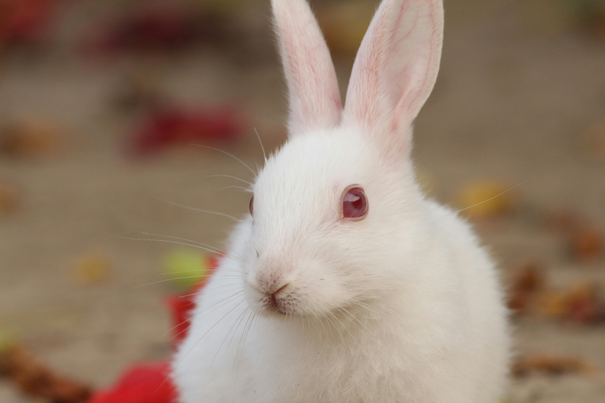

Por que e como os coelhos se tornaram pets famosos?
Os coelhos são famosos principalmente por sua ligação com a Páscoa, onde simbolizam fertilidade e renascimento, e se tornaram animais de estimação populares graças à sua aparência fofa e comportamento amigável. Além disso, sua presença frequente em livros, filmes e desenhos animados, como o famoso Coelho Branco de "Alice no País das Maravilhas" e o Sansão da "Turma da Mônica", ajudaram a aumentar ainda mais sua fama e reconhecimento.
A raça mais comum
A raça de coelho mais comum como animal de estimação é o Coelho Nova Zelândia Branco, conhecido por seu pelo branco, orelhas eretas e natureza amigável. Apesar do nome, a raça foi desenvolvida nos Estados Unidos e inicialmente utilizada para produção de carne e pele, mas se tornou popular como animal de companhia devido ao seu temperamento dócil e interativo.
Cuidados básicos com coelhos
Coelhos são animais delicados e precisam de cuidado especial, especialmente na interação com crianças, que deve ser sempre supervisionada para evitar machucados. Eles podem viver entre 8 e 10 anos se bem cuidados, e exigem visitas regulares ao veterinário especializado, pois muitas vezes não demonstram sinais claros de doenças.
Eles precisam de exercícios diários fora da gaiola ou cercado, com pelo menos 2 horas para explorar e brincar. O espaço onde ficam deve ser amplo — equivalente a pelo menos 4 vezes o comprimento do corpo do coelho — e a base da gaiola preferencialmente de plástico para proteger suas patas.Manter o ambiente limpo, com água fresca, alimentação balanceada e brinquedos adequados, como os de madeira para roer, é fundamental para a saúde e bem-estar. Além disso, os coelhos precisam de abrigo contra sol, chuva e frio, com temperatura ideal entre 17ºC e 21ºC.Por fim, para transporte ou visitas ao veterinário, use caixas apropriadas, bem ventiladas e com água e feno para garantir conforto e segurança.